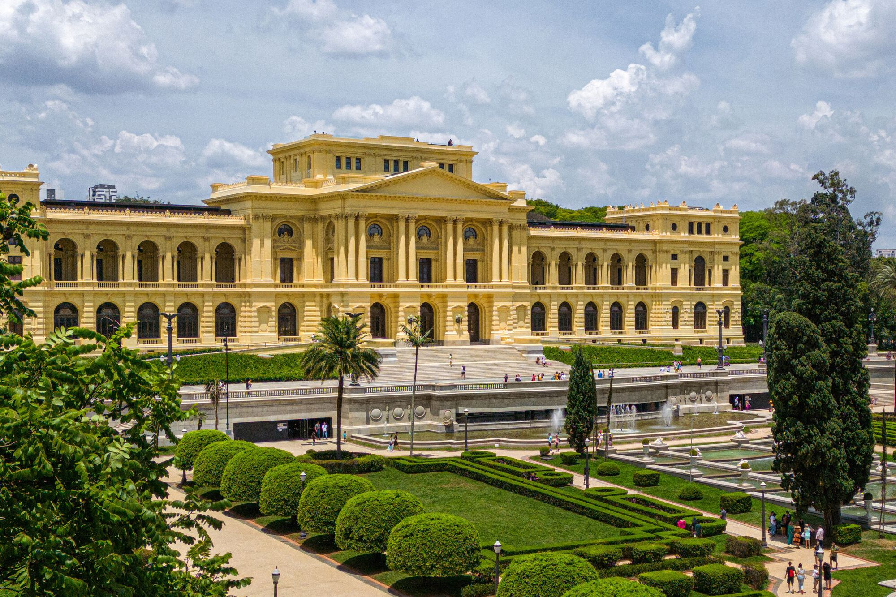
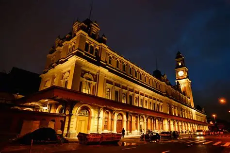

Museus culturais
Conheça os museus mais visitados de São Paulo

Museu do Ipiranga
Boa localizaçãoPróximo à estação Alto do Ipiranga, Linha 2–Verde 📍Museu do Ipiranga, Rua Xavier de Almeida, 12

Museu da Língua Portuguesa
Passeio livrePróximo à estação liberdade e são bento 📍Viaduto do chá-Centro Histórico de São Paulo

Museu catavento
Mais movimentadoDentro da estação luz📍Museu da Língua Portuguesa, Praça da Luz, 1